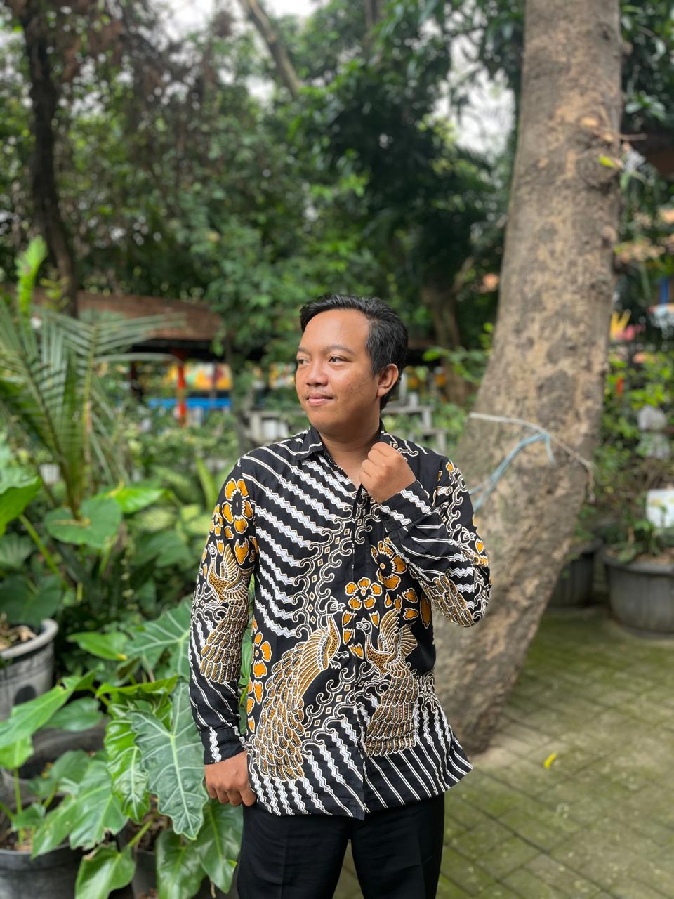
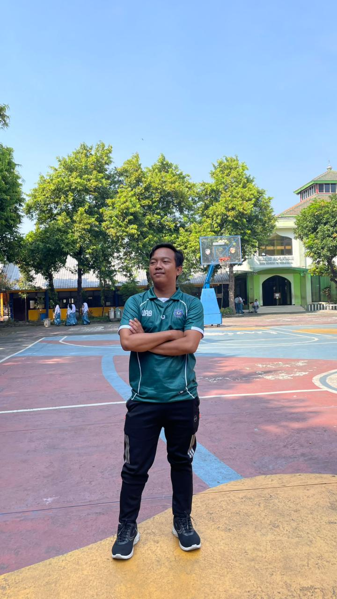
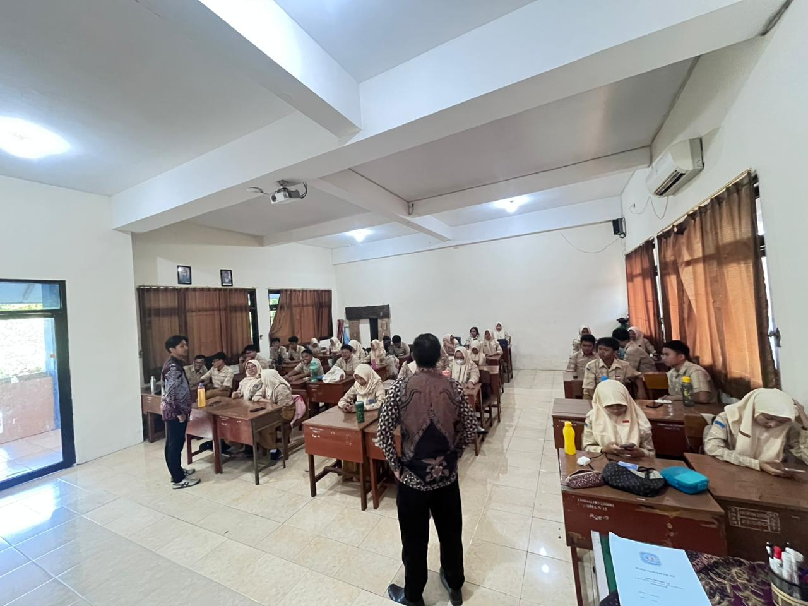
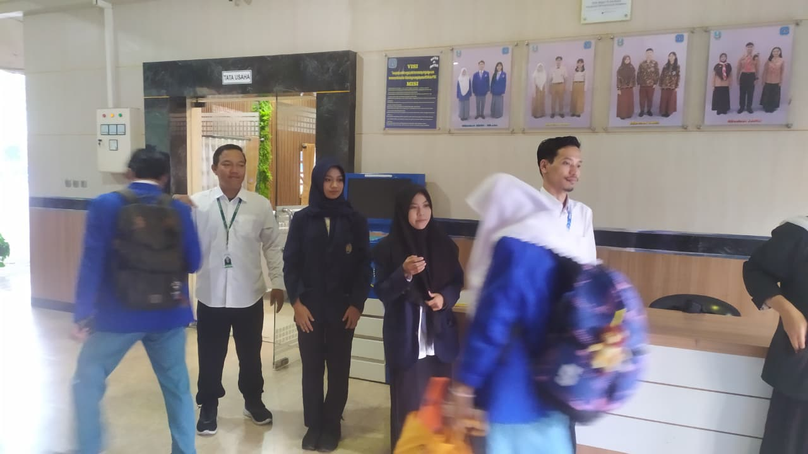
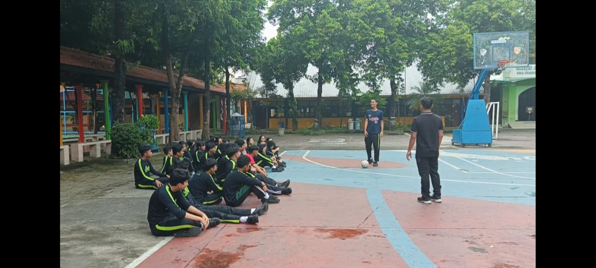
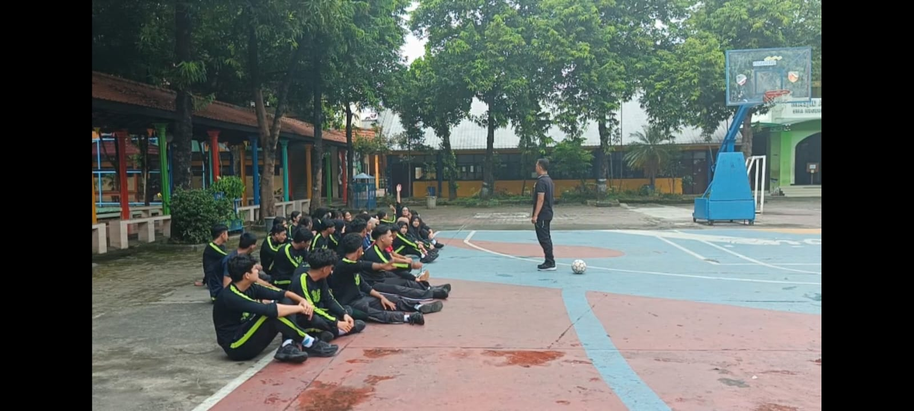

Hamzah Ali Sayyidi, S.Pd.
PPG Prajabatan PJOK | Universitas PGRI Adi Buana Surabaya
Membangun generasi sehat, berkarakter, dan berdaya saing melalui pendidikan jasmani yang reflektif & inovatif
Lihat Portofolio
Membangun generasi sehat, berkarakter, dan berdaya saing melalui pendidikan jasmani yang reflektif & inovatif
Lihat Portofolio
Jombang, Jawa Timur
NIM: 255970097
Saya Hamzah Ali Sayyidi, berasal dari Jombang yang dikenal sebagai Kota Santri dengan lingkungan masyarakat yang religius, disiplin, dan menjunjung tinggi nilai kebersamaan. Lingkungan tempat saya tumbuh mengajarkan pentingnya tanggung jawab, kerja keras, serta sikap saling menghargai. Nilai-nilai tersebut membentuk karakter saya menjadi pribadi yang adaptif dan memiliki semangat untuk terus berkembang.
Keinginan saya menjadi guru muncul karena saya tertarik pada dunia pendidikan dan ingin menjadi seseorang yang dapat memberikan manfaat bagi orang lain melalui ilmu pengetahuan. Menurut saya, guru bukan hanya berperan dalam menyampaikan materi pembelajaran, tetapi juga menjadi sosok yang mampu membimbing, memberikan motivasi, dan menciptakan lingkungan belajar yang positif. Saya melihat profesi guru sebagai pekerjaan yang mulia karena memiliki peran besar dalam membentuk kualitas generasi masa depan.
Untuk mewujudkan cita-cita tersebut, saya melanjutkan pendidikan pada program studi Pendidikan Jasmani, Kesehatan, dan Rekreasi (PJOK). Selama menempuh pendidikan, saya memperoleh banyak pengalaman dan pembelajaran yang semakin memperkuat keinginan saya untuk menjadi pendidik profesional. Saat ini saya sedang melaksanakan Pendidikan Profesi Guru (PPG) di Universitas PGRI Adi Buana Surabaya sebagai langkah untuk meningkatkan kompetensi dan kualitas diri sebagai calon guru. Saya berharap dapat menjadi guru profesional yang mampu menciptakan pembelajaran yang aktif, menyenangkan, dan bermakna bagi peserta didik.
Sekolah PPL : SMAN 15 SURABAYA
Guru Pamong : Drs. Eko Yulianto, MM
Dosen Pembimbing Lapangan : Dr. Suharti S.Pd M.Pd M.Si
Berikut merupakan lokasi Lembaga Pendidikan Tenaga Kependidikan (LPTK) dan sekolah tempat pelaksanaan Praktik Pengalaman Lapangan (PPL) sebagai bagian dari proses pengembangan kompetensi calon guru profesional.
Universitas PGRI Adi Buana Surabaya
Surabaya, Jawa Timur
SMAN 15 Surabaya
Surabaya, Jawa Timur
Bagi saya, pendidikan bukan hanya proses menyampaikan materi, tetapi proses membentuk karakter, keterampilan, dan kebiasaan positif peserta didik. Dalam pembelajaran PJOK, peserta didik tidak hanya belajar tentang gerak dan kesehatan, tetapi juga belajar disiplin, kerja sama, tanggung jawab, dan sportivitas. Oleh karena itu, guru memiliki peran sebagai fasilitator yang mampu menciptakan pengalaman belajar yang aktif dan bermakna.
Selama pelaksanaan PPL Terbimbing, saya memahami bahwa setiap peserta didik memiliki karakteristik, kemampuan, dan gaya belajar yang berbeda. Hal tersebut membuat saya perlu merancang pembelajaran yang adaptif, inovatif, dan berpusat pada peserta didik. Pendekatan pembelajaran berbasis aktivitas, kolaborasi, dan refleksi membantu peserta didik lebih aktif dalam proses pembelajaran.
Filosofi mengajar yang saya pegang yaitu menjadi guru yang terus belajar, reflektif, dan mampu memberikan dampak positif bagi peserta didik. Saya percaya bahwa guru profesional tidak hanya menguasai materi, tetapi juga mampu menjadi teladan dalam sikap, komunikasi, dan pengembangan karakter peserta didik untuk menghadapi tantangan masa depan.
Menjadi guru PJOK profesional yang mampu menciptakan pembelajaran aktif, inovatif, menyenangkan, dan bermakna serta membentuk peserta didik yang sehat, disiplin, sportif, dan berkarakter sesuai Profil Pelajar Pancasila.
Karakter guru yang ingin saya bangun yaitu disiplin, adaptif, kreatif, komunikatif, reflektif, dan mampu menjadi teladan bagi peserta didik baik dalam sikap maupun perilaku sehari-hari.
Memahami karakteristik peserta didik dan mampu merancang pembelajaran efektif.
Menguasai materi PJOK dan mengembangkan pembelajaran inovatif.
Membangun komunikasi dan kerja sama yang baik dengan lingkungan sekolah.
Menjadi pribadi yang dewasa, disiplin, dan mampu menjadi teladan.
E-Portfolio ini disusun sebagai bentuk dokumentasi proses pelaksanaan Praktik Pengalaman Lapangan (PPL) serta pengembangan kompetensi sebagai calon guru profesional. Portfolio ini memuat berbagai artefak pembelajaran, refleksi diri, dokumentasi kegiatan, dan hasil evaluasi yang menunjukkan perkembangan kemampuan pedagogik, profesional, sosial, dan kepribadian.
Selain sebagai bukti capaian pembelajaran, e-portfolio ini juga menjadi sarana refleksi untuk mengevaluasi kekuatan dan kelemahan selama praktik mengajar sehingga dapat digunakan sebagai dasar perbaikan dan pengembangan diri secara berkelanjutan.
Konteks: Modul ajar digunakan pada pembelajaran PJOK kelas X SMA materi permainan sepak bola dengan pendekatan aktif dan kolaboratif. Tujuan: Membantu peserta didik memahami teknik dasar sepak bola serta meningkatkan kerja sama dan sportivitas.
Peserta didik lebih aktif karena terlibat langsung dalam praktik dan diskusi kelompok.
Beberapa peserta didik masih memerlukan pendampingan saat praktik.
Menggunakan pendekatan student centered learning berbasis konstruktivisme.
Penyesuaian perangkat dengan karakteristik siswa dan kondisi kelas yang berbeda.
Pembelajaran dirancang melalui praktik, diskusi, dan kerja sama kelompok.
Penggunaan media interaktif dan keterlibatan aktif peserta didik.
Tingkat kesulitan dan instruksi disesuaikan dengan kemampuan peserta didik.
Strategi Pembelajaran PJOK, Evaluasi Pembelajaran, Kurikulum.
Konteks: Digunakan pada pembelajaran PJOK materi kebugaran jasmani untuk membantu peserta didik memahami gerakan dengan lebih jelas. Tujuan: Meningkatkan minat belajar dan pemahaman melalui tampilan visual.
Peserta didik lebih fokus dan antusias selama pembelajaran.
Memerlukan fasilitas LCD dan koneksi listrik yang memadai.
Sesuai teori belajar multimedia (teks, gambar, video).
Penyesuaian dengan karakteristik peserta didik yang beragam dan alokasi waktu.
Konstruktivisme dan student centered learning.
Media interaktif, pengelolaan kelas kondusif, komunikasi guru-siswa.
Instruksi sederhana dan pendampingan bertahap untuk kelas heterogen.
Teknologi Pembelajaran, Media PJOK, Strategi Pembelajaran Inovatif.
Konteks: Digunakan pada pembelajaran permainan sepak bola dengan model diskusi kelompok. Tujuan: Membantu peserta didik memahami materi melalui kerja sama dan pemecahan masalah.
Peserta didik aktif berdiskusi dan berani menyampaikan pendapat.
Masih ada siswa yang kurang aktif dalam kelompok.
Teori pembelajaran kolaboratif (interaksi sosial dalam belajar).
Menyesuaikan dengan kemampuan peserta didik dan kondisi sarana.
Student centered learning, diskusi kelompok.
Media interaktif, pengelolaan kelas kondusif, komunikasi efektif.
Pendampingan ekstra untuk siswa yang kurang aktif.
Evaluasi Pembelajaran, Strategi Pembelajaran, Pengembangan Kurikulum.
Konteks: Dokumentasi praktik mengajar saat pembelajaran PJOK berlangsung di kelas X SMA. Tujuan: Bahan refleksi untuk meningkatkan kemampuan mengajar dan pengelolaan kelas.
Membantu mengevaluasi cara mengajar, komunikasi, dan interaksi.
Sudut pengambilan video belum merekam seluruh aktivitas.
Reflective teaching untuk meningkatkan profesionalisme guru.
Penyesuaian perangkat dengan kondisi kelas dan sarana.
Konstruktivisme, pembelajaran aktif, praktik langsung.
Media interaktif, pengelolaan kelas kondusif.
Pendekatan bertahap untuk kelas dengan kemampuan heterogen.
Microteaching, Praktik Pembelajaran, Refleksi Pembelajaran.
Konteks: Dokumentasi kegiatan pembelajaran dan aktivitas selama pelaksanaan PPL di sekolah. Tujuan: Sebagai bukti kegiatan dan dokumentasi proses pembelajaran.
Memberikan gambaran nyata proses pembelajaran dan interaksi.
Tidak semua momen pembelajaran terdokumentasi maksimal.
Dokumentasi mendukung refleksi dan evaluasi kompetensi guru.
Penyesuaian dengan karakteristik peserta didik dan kondisi sekolah.
Pembelajaran aktif, konstruktivisme, praktik langsung.
Media interaktif, komunikasi efektif, motivasi siswa.
Pendekatan individual untuk siswa dengan kesulitan belajar.
Praktik Pengalaman Lapangan, Pengembangan Profesi Guru.
Konteks: Hasil tugas individu dan kelompok pada materi permainan sepak bola. Tujuan: Mengetahui pemahaman peserta didik terhadap materi yang telah dipelajari.
Membantu guru melihat perkembangan kemampuan peserta didik.
Hasil pekerjaan masih bervariasi sesuai kemampuan masing-masing.
Authentic assessment (menilai proses dan hasil belajar).
Penyesuaian perangkat dengan kondisi dan sarana sekolah.
Student centered learning, konstruktivisme, diskusi kelompok.
Media interaktif, pengelolaan kelas kondusif.
Pendampingan khusus untuk siswa dengan kemampuan terbatas.
Asesmen Pembelajaran, Evaluasi Hasil Belajar, Pengembangan Peserta Didik.




Selama pelaksanaan PPL, saya memahami bahwa pembelajaran yang efektif tidak hanya berpusat pada guru, tetapi juga memberi ruang bagi peserta didik untuk aktif dan terlibat dalam proses pembelajaran.
Tantangan yang dihadapi meliputi pengelolaan kelas dan perbedaan kemampuan peserta didik. Solusi yang dilakukan berupa pendekatan bertahap, pemberian motivasi, serta penggunaan metode pembelajaran aktif.
Penggunaan media pembelajaran seperti presentasi interaktif dan video pembelajaran membantu meningkatkan minat serta pemahaman peserta didik selama proses belajar berlangsung.
Saya berkomitmen untuk terus meningkatkan kompetensi melalui pelatihan, seminar pendidikan, dan pengembangan kemampuan di bidang teknologi pembelajaran.
Pelaksanaan PPL memberikan pengalaman berharga dalam memahami peran dan tanggung jawab guru sebagai pendidik profesional yang adaptif, inovatif, dan mampu menciptakan pembelajaran bermakna.
Selama pelaksanaan PPL Terbimbing, saya belajar mengenai proses merancang pembelajaran, mengelola kelas, memahami karakter peserta didik, serta melakukan evaluasi pembelajaran secara reflektif. Pengalaman ini membantu saya memahami bahwa guru profesional perlu memiliki kemampuan pedagogik, komunikasi, dan manajemen pembelajaran yang baik.
Salah satu tantangan yang saya hadapi yaitu menjaga keterlibatan seluruh peserta didik saat praktik PJOK berlangsung. Solusi yang saya lakukan yaitu menggunakan model pembelajaran berbasis permainan, membagi kelompok belajar secara seimbang, dan memberikan instruksi yang lebih sederhana agar pembelajaran menjadi lebih aktif dan efektif.
Guru pamong dan dosen pembimbing memberikan masukan terkait pengelolaan kelas, variasi metode pembelajaran, serta penguatan refleksi setelah proses mengajar. Umpan balik tersebut membantu saya memperbaiki cara berkomunikasi, meningkatkan kesiapan perangkat pembelajaran, dan lebih percaya diri dalam mengajar.
Sebagai tindak lanjut menuju PPL Mandiri, saya berkomitmen untuk terus meningkatkan kompetensi pedagogik, kemampuan penggunaan teknologi pembelajaran, serta memperdalam strategi pembelajaran PJOK yang inovatif dan menyenangkan agar mampu menciptakan pembelajaran yang lebih efektif dan bermakna.
Sebelum melaksanakan PPL, saya masih mengalami kesulitan dalam pengelolaan kelas dan penyusunan pembelajaran berbasis peserta didik. Setelah melalui proses praktik, refleksi, dan evaluasi bersama guru pamong serta dosen pembimbing, saya menjadi lebih percaya diri dalam mengelola pembelajaran, menggunakan media interaktif, dan melakukan evaluasi pembelajaran secara reflektif.
Sebagai upaya pengembangan diri menuju guru profesional, saya berkomitmen untuk terus meningkatkan kompetensi pedagogik, profesional, sosial, dan kepribadian melalui pelatihan, seminar pendidikan, serta pengembangan pembelajaran berbasis teknologi. Selain itu, saya akan terus melakukan refleksi pembelajaran, memperbaiki pengelolaan kelas, dan mengembangkan model pembelajaran PJOK yang inovatif agar mampu menciptakan pembelajaran yang aktif, menyenangkan, dan bermakna bagi peserta didik.